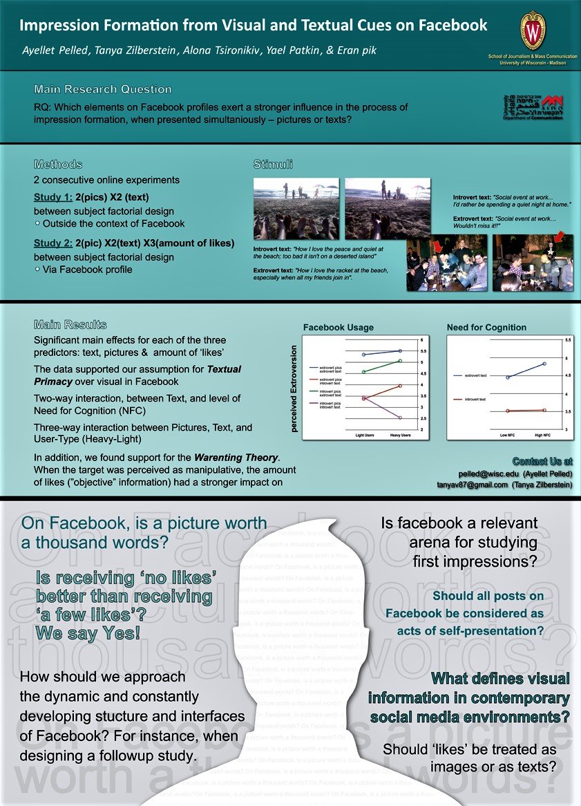

A full list of my publications is available on Google scholar.
Below is a sample of my more recent collaborations on research examining the influence of psychological processes on behavior in computer mediated communication:
Duncan, M., Pelled, A., Wise, D., Ghosh, S., Shan, Y., Zheng, M., & McLeod, D. (2020). Staying silent and speaking out in online comment sections: The influence of spiral of silence and corrective action in reaction to news. Computers in Human Behavior, 102, 192205.
Lewis, N., Pelled, A., & Tal-Or, N. (2019). The effect of exposure to thin models and digital modification disclaimers on women's body satisfaction. International Journal of Psychology. DOI: 10.1002/ijop.12572
Walter, N., Tukachinsky, R., Pelled, A., & Nabi, R. (2018). Meta-analysis of anger and persuasion: An empirical integration of four models. Journal of Communication, 69(1), 73-93.
Pelled, A ., Zilberstein, T., Tsirulnikov, A., Pick, E., Patkin, Y., & Tal-Or, N. (2017). Textual Primacy Online: Impression Formation Based on Textual and Visual Cues in Facebook Profiles. American Behavioral Scientist, 61(7), 672-687.